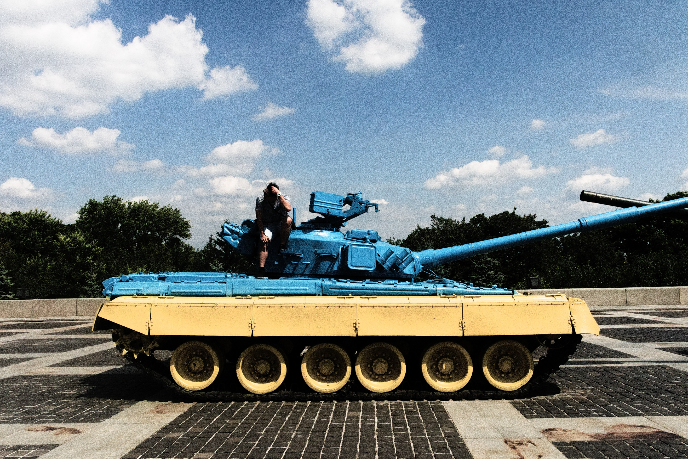

Пасха는 그리스어 `πάσχα`에서 유래된 말로 불행과 고난을 극복한다는 의미입니다.
슬라브 정교의 `부활절`로 부활달걀과 쿨리치라는 빵을 만들어 부활절을 축하합니다.
부활절을 상징하는 것 중 대표적으로 부활달걀, 토끼 그리고 백합이 있습니다.
승리의 날

승리의 날은 나치 독일이 소비에트 연방에게 항복한 날로, 모스크바 시간 기준 5월 9일 입니다.
소련 붕괴 이후 독립 국가 연합 공화국들도 5월 9일을 승리의 날로 지정하고 있습니다.